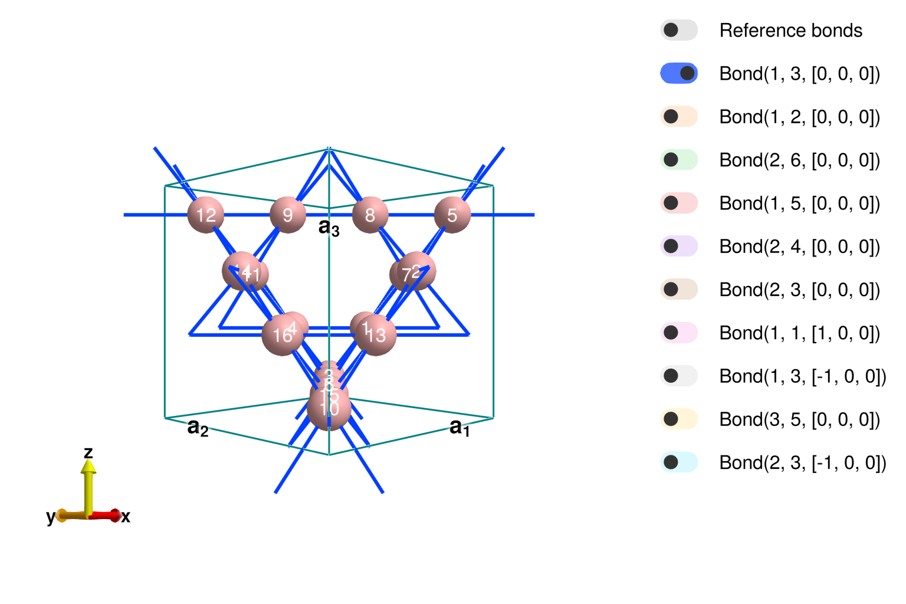
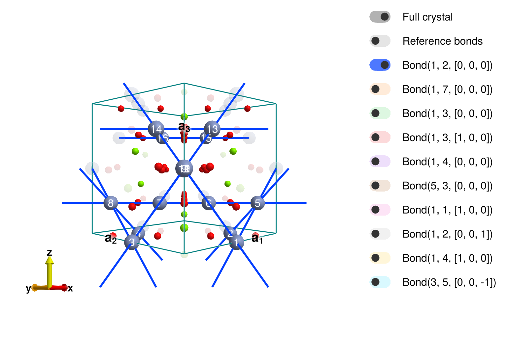
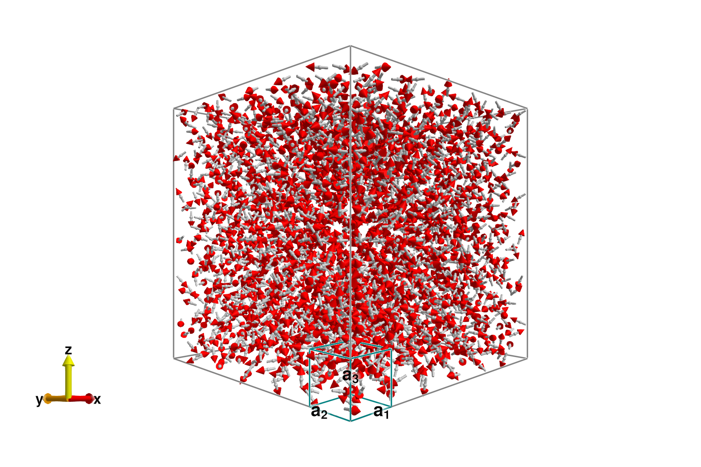
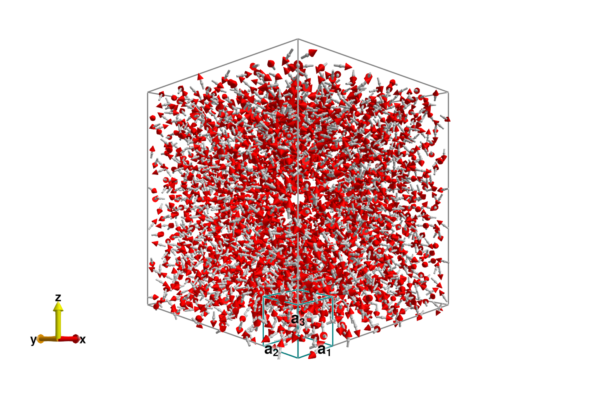
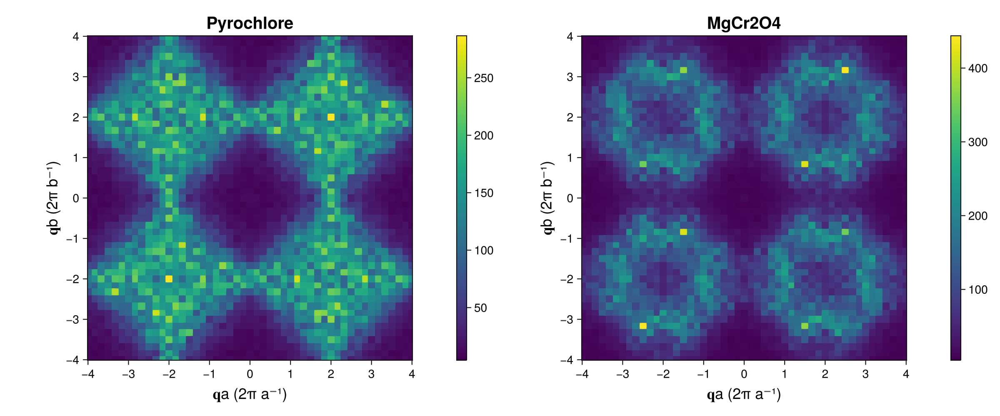
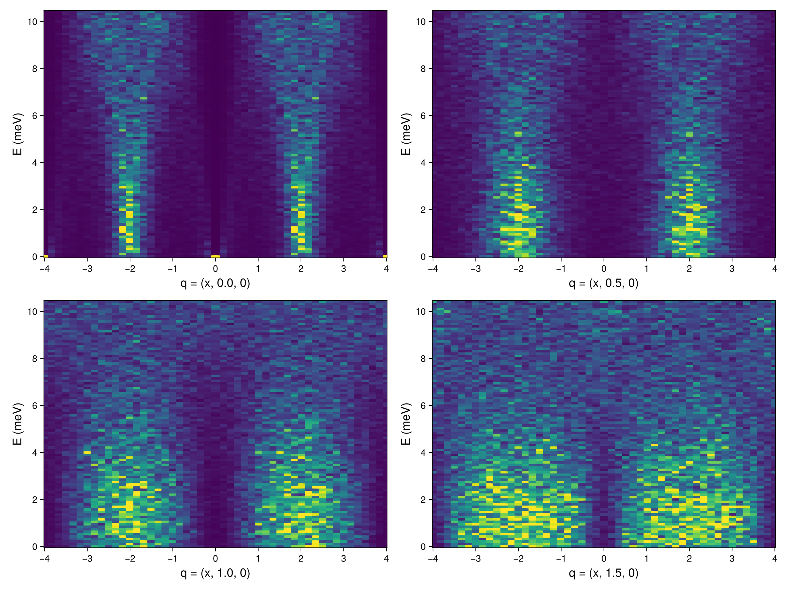
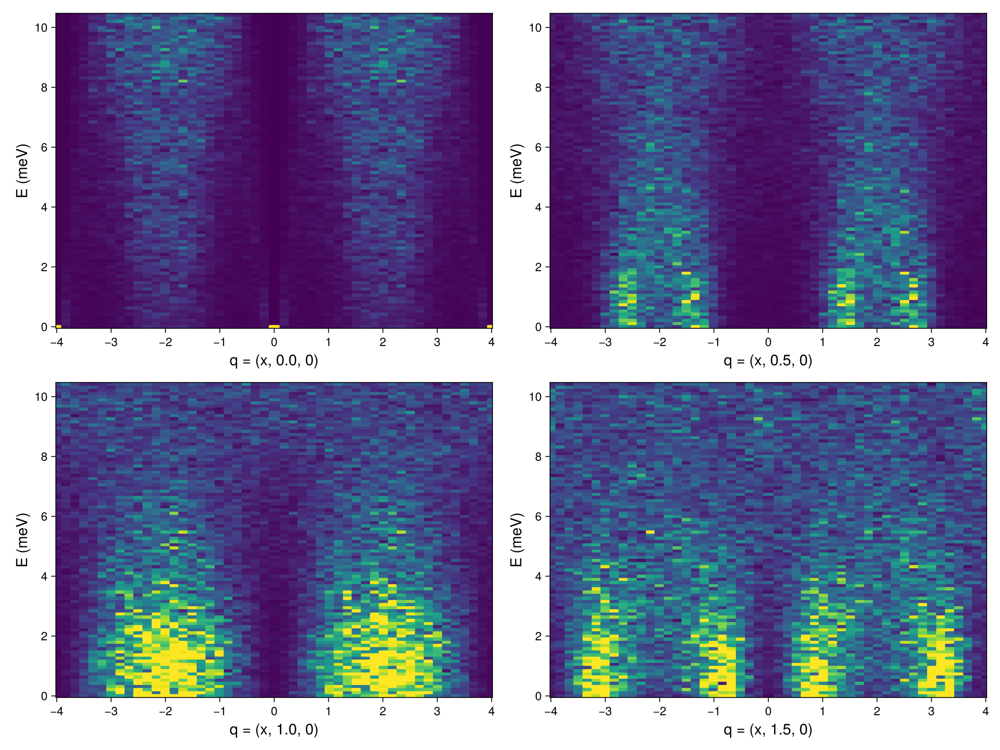
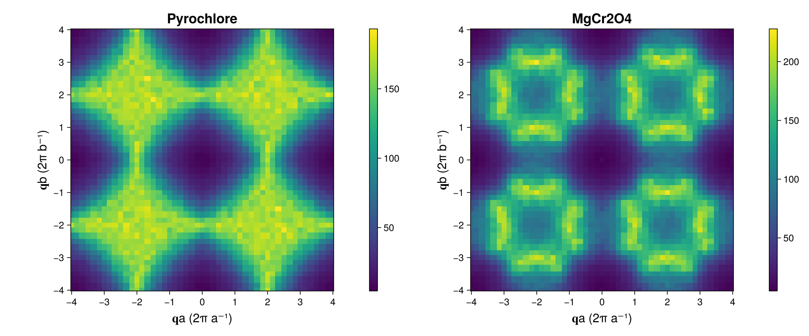

MgCr2O4 at Finite Temperature
Author: Martin Mourigal
Date: September 9, 2022 (Updated by November 1, 2023 using Sunny 0.5.5)
In this tutorial, we will walk through an example in Sunny and calculate the spin dynamical properties of the Heisenberg pyrochlore antiferromagnet and apply this knowledge to MgCr2O4 and ZnCr2O4, which are known to approximate this model. Relevant publications include:
[1] P. H. Conlon and J. T. Chalker, Phys. Rev. Lett. 102, 237206 (2009)
[2] P. H. Conlon and J. T. Chalker, Phys. Rev. B 81, 224413 (2010)
[3] X. Bai, J. A. M. Paddison, et al. Phys. Rev. Lett. 122, 097201 (2019)
Setting up Julia
To run the examples in the tutorial, you will need a working installation of the Julia programming language and the Sunny package. Some useful references for getting started are:
We will begin by loading the relevant packages.
using Sunny # The main package
using GLMakie # Plotting packageSetting up the crystal structure
Before specifying the interactions of our system, we first must set up the crystal. We will begin by specifying the pyrochlore lattice (illustrated below) in the manner that is typical of theorists.

Picture Credits: Theory of Quantum Matter Unit, OIST
"Theorist" Method
In this approach, we directly define the lattice vectors and specify the position of each atom in fractional coordinates.
latvecs = lattice_vectors(8.3342, 8.3342, 8.3342, 90, 90, 90)
positions = [[0.875, 0.625, 0.375],
[0.625, 0.125, 0.625],
[0.875, 0.875, 0.125],
[0.625, 0.875, 0.375],
[0.875, 0.125, 0.875],
[0.625, 0.625, 0.125],
[0.875, 0.375, 0.625],
[0.625, 0.375, 0.875],
[0.375, 0.625, 0.875],
[0.125, 0.125, 0.125],
[0.375, 0.875, 0.625],
[0.125, 0.875, 0.875],
[0.375, 0.125, 0.375],
[0.125, 0.625, 0.625],
[0.375, 0.375, 0.125],
[0.125, 0.375, 0.375]];
types = ["B" for _ in positions]
xtal_pyro = Crystal(latvecs, positions; types) # We will call this crystal the Theoretical PyrochloreCrystal
Spacegroup 'F d -3 m' (227)
Lattice params a=8.334, b=8.334, c=8.334, α=90°, β=90°, γ=90°
Cell volume 578.9
Type 'B', Wyckoff 16c (point group '.-3m'):
1. [7/8, 5/8, 3/8]
2. [5/8, 1/8, 5/8]
3. [7/8, 7/8, 1/8]
4. [5/8, 7/8, 3/8]
5. [7/8, 1/8, 7/8]
6. [5/8, 5/8, 1/8]
7. [7/8, 3/8, 5/8]
8. [5/8, 3/8, 7/8]
9. [3/8, 5/8, 7/8]
10. [1/8, 1/8, 1/8]
11. [3/8, 7/8, 5/8]
12. [1/8, 7/8, 7/8]
13. [3/8, 1/8, 3/8]
14. [1/8, 5/8, 5/8]
15. [3/8, 3/8, 1/8]
16. [1/8, 3/8, 3/8]
To examine the result interactively, we can call view_crystal.
view_crystal(xtal_pyro, 3.2)
"Experimentalist" Method #1 (Incorrect)
A real crystal is more complicated than this, however, and we will now construct the system using the actual CIF file of MgCr2O4 from ICSD. This can be done by copying over the data from a CIF file by hand, but this can be dangerous, as shown below.
latvecs = lattice_vectors(8.3342, 8.3342, 8.3342, 90, 90, 90)
positions = [[0.1250, 0.1250, 0.1250],
[0.5000, 0.5000, 0.5000],
[0.2607, 0.2607, 0.2607]]
types = ["Mg","Cr","O"]
xtal_mgcro_1 = Crystal(latvecs, positions; types)Crystal
Spacegroup 'R 3 m' (160)
Lattice params a=8.334, b=8.334, c=8.334, α=90°, β=90°, γ=90°
Cell volume 578.9
Type 'Mg', Wyckoff 3a (point group '3m'):
1. [1/8, 1/8, 1/8]
Type 'Cr', Wyckoff 3a (point group '3m'):
2. [1/2, 1/2, 1/2]
Type 'O', Wyckoff 3a (point group '3m'):
3. [0.2607, 0.2607, 0.2607]
Sunny returned a valid crystal, but it did get right space group for MgCr2O4. This can be fixed by modifying the input to include the space group and the setting.
"Experimentalist" Method #2 (Correct)
As above, we will define the crystal structure of MgCr2O4 by copying the info from a CIF file, but we will also specify the space group and setting explicitly.
latvecs = lattice_vectors(8.3342, 8.3342, 8.3342, 90, 90, 90)
positions = [[0.1250, 0.1250, 0.1250],
[0.5000, 0.5000, 0.5000],
[0.2607, 0.2607, 0.2607]]
types = ["Mg","Cr","O"]
spacegroup = 227 # Space Group Number
setting = "2" # Space Group setting
xtal_mgcro_2 = Crystal(latvecs, positions, spacegroup; types, setting)Crystal
Spacegroup 'F d -3 m' (227)
Lattice params a=8.334, b=8.334, c=8.334, α=90°, β=90°, γ=90°
Cell volume 578.9
Type 'Mg', Wyckoff 8b (point group '-43m'):
1. [1/8, 1/8, 1/8]
2. [5/8, 5/8, 1/8]
3. [7/8, 3/8, 3/8]
4. [3/8, 7/8, 3/8]
5. [5/8, 1/8, 5/8]
6. [1/8, 5/8, 5/8]
7. [3/8, 3/8, 7/8]
8. [7/8, 7/8, 7/8]
Type 'Cr', Wyckoff 16c (point group '.-3m'):
9. [1/2, 0, 0]
10. [3/4, 1/4, 0]
11. [0, 1/2, 0]
12. [1/4, 3/4, 0]
13. [3/4, 0, 1/4]
14. [1/2, 1/4, 1/4]
15. [1/4, 1/2, 1/4]
16. [0, 3/4, 1/4]
17. [0, 0, 1/2]
18. [1/4, 1/4, 1/2]
19. [1/2, 1/2, 1/2]
20. [3/4, 3/4, 1/2]
21. [1/4, 0, 3/4]
22. [0, 1/4, 3/4]
23. [3/4, 1/2, 3/4]
24. [1/2, 3/4, 3/4]
Type 'O', Wyckoff 32e (point group '.3m'):
25. [0.7393, 0.0107, 0.0107]
26. [0.5107, 0.2393, 0.0107]
27. [0.2393, 0.5107, 0.0107]
28. [0.0107, 0.7393, 0.0107]
29. [0.5107, 0.0107, 0.2393]
30. [0.7393, 0.2393, 0.2393]
31. [0.0107, 0.5107, 0.2393]
32. [0.2393, 0.7393, 0.2393]
33. [0.2607, 0.2607, 0.2607]
34. [0.4893, 0.4893, 0.2607]
35. [0.7607, 0.7607, 0.2607]
36. [0.9893, 0.9893, 0.2607]
37. [0.4893, 0.2607, 0.4893]
38. [0.2607, 0.4893, 0.4893]
39. [0.9893, 0.7607, 0.4893]
40. [0.7607, 0.9893, 0.4893]
41. [0.2393, 0.0107, 0.5107]
42. [0.0107, 0.2393, 0.5107]
43. [0.7393, 0.5107, 0.5107]
44. [0.5107, 0.7393, 0.5107]
45. [0.0107, 0.0107, 0.7393]
46. [0.2393, 0.2393, 0.7393]
47. [0.5107, 0.5107, 0.7393]
48. [0.7393, 0.7393, 0.7393]
49. [0.7607, 0.2607, 0.7607]
50. [0.9893, 0.4893, 0.7607]
51. [0.2607, 0.7607, 0.7607]
52. [0.4893, 0.9893, 0.7607]
53. [0.9893, 0.2607, 0.9893]
54. [0.7607, 0.4893, 0.9893]
55. [0.4893, 0.7607, 0.9893]
56. [0.2607, 0.9893, 0.9893]
This result is correct, but at this point we might as well import the CIF file directly, which we now proceed to do.
"Experimentalist" Method #3 (Correct – if your CIF file is)
To import a CIF file, simply give the path to Crystal. One may optionally specify a precision parameter to apply to the symmetry analysis.
cif = joinpath(@__DIR__, "..", "src", "MgCr2O4_160953_2009.cif")
xtal_mgcro_3 = Crystal(cif; symprec=0.001)Crystal
Spacegroup 'F d -3 m' (227)
Lattice params a=8.333, b=8.333, c=8.333, α=90°, β=90°, γ=90°
Cell volume 578.6
Type 'Mg1', Wyckoff 8b (point group '-43m'):
1. [1/8, 1/8, 1/8]
2. [5/8, 5/8, 1/8]
3. [7/8, 3/8, 3/8]
4. [3/8, 7/8, 3/8]
5. [5/8, 1/8, 5/8]
6. [1/8, 5/8, 5/8]
7. [3/8, 3/8, 7/8]
8. [7/8, 7/8, 7/8]
Type 'Cr1', Wyckoff 16c (point group '.-3m'):
9. [1/2, 0, 0]
10. [3/4, 1/4, 0]
11. [0, 1/2, 0]
12. [1/4, 3/4, 0]
13. [3/4, 0, 1/4]
14. [1/2, 1/4, 1/4]
15. [1/4, 1/2, 1/4]
16. [0, 3/4, 1/4]
17. [0, 0, 1/2]
18. [1/4, 1/4, 1/2]
19. [1/2, 1/2, 1/2]
20. [3/4, 3/4, 1/2]
21. [1/4, 0, 3/4]
22. [0, 1/4, 3/4]
23. [3/4, 1/2, 3/4]
24. [1/2, 3/4, 3/4]
Type 'O1', Wyckoff 32e (point group '.3m'):
25. [0.7388, 0.0112, 0.0112]
26. [0.5112, 0.2388, 0.0112]
27. [0.2388, 0.5112, 0.0112]
28. [0.0112, 0.7388, 0.0112]
29. [0.5112, 0.0112, 0.2388]
30. [0.7388, 0.2388, 0.2388]
31. [0.0112, 0.5112, 0.2388]
32. [0.2388, 0.7388, 0.2388]
33. [0.2612, 0.2612, 0.2612]
34. [0.4888, 0.4888, 0.2612]
35. [0.7612, 0.7612, 0.2612]
36. [0.9888, 0.9888, 0.2612]
37. [0.4888, 0.2612, 0.4888]
38. [0.2612, 0.4888, 0.4888]
39. [0.9888, 0.7612, 0.4888]
40. [0.7612, 0.9888, 0.4888]
41. [0.2388, 0.0112, 0.5112]
42. [0.0112, 0.2388, 0.5112]
43. [0.7388, 0.5112, 0.5112]
44. [0.5112, 0.7388, 0.5112]
45. [0.0112, 0.0112, 0.7388]
46. [0.2388, 0.2388, 0.7388]
47. [0.5112, 0.5112, 0.7388]
48. [0.7388, 0.7388, 0.7388]
49. [0.7612, 0.2612, 0.7612]
50. [0.9888, 0.4888, 0.7612]
51. [0.2612, 0.7612, 0.7612]
52. [0.4888, 0.9888, 0.7612]
53. [0.9888, 0.2612, 0.9888]
54. [0.7612, 0.4888, 0.9888]
55. [0.4888, 0.7612, 0.9888]
56. [0.2612, 0.9888, 0.9888]
Finally, we wish to restrict attention to the magnetic atoms in the unit cell while maintaining symmetry information for the full crystal, which is required to determine the correct exchange and g-factor anisotropies. This can be achieved with the subcrystal function.
xtal_mgcro = subcrystal(xtal_mgcro_2,"Cr")Crystal
Spacegroup 'F d -3 m' (227)
Lattice params a=8.334, b=8.334, c=8.334, α=90°, β=90°, γ=90°
Cell volume 578.9
Type 'Cr', Wyckoff 16c (point group '.-3m'):
1. [1/2, 0, 0]
2. [3/4, 1/4, 0]
3. [0, 1/2, 0]
4. [1/4, 3/4, 0]
5. [3/4, 0, 1/4]
6. [1/2, 1/4, 1/4]
7. [1/4, 1/2, 1/4]
8. [0, 3/4, 1/4]
9. [0, 0, 1/2]
10. [1/4, 1/4, 1/2]
11. [1/2, 1/2, 1/2]
12. [3/4, 3/4, 1/2]
13. [1/4, 0, 3/4]
14. [0, 1/4, 3/4]
15. [3/4, 1/2, 3/4]
16. [1/2, 3/4, 3/4]
Making a System and assigning interactions
Making a System
Before assigning any interactions, we first have to set up a System using our Crystal.
dims = (6, 6, 6) # Supercell dimensions
spininfos = [SpinInfo(1, S=3/2, g=2)] # Specify spin information, note that all sites are symmetry equivalent
sys_pyro = System(xtal_pyro, dims, spininfos, :dipole) # Make a system in dipole (Landau-Lifshitz) mode on pyrochlore lattice
sys_mgcro = System(xtal_mgcro, dims, spininfos, :dipole); # Same on MgCr2O4 crystalTo understand what interactions we may assign to this system, we have to understand the the symmetry properties of the crystal, which we turn to next.
Symmetry analysis for exchange and single-ion anisotropies
print_symmetry_table reports all the exchange interactions, single-site anisotropies, and g-factors allowed on our crystal. It takes a Cyrstal and a distance. We'll look at both the "theorist's" pyrochlore lattice,
print_symmetry_table(xtal_pyro, 5.9)Atom 1
Type 'B', position [7/8, 5/8, 3/8], multiplicity 16
Allowed g-tensor: [ A B -B
B A B
-B B A]
Allowed anisotropy in Stevens operators:
c₁*(𝒪[2,-2]+2𝒪[2,-1]-2𝒪[2,1]) +
c₂*(7𝒪[4,-3]+2𝒪[4,-2]-𝒪[4,-1]+𝒪[4,1]+7𝒪[4,3]) + c₃*(𝒪[4,0]+5𝒪[4,4]) +
c₄*(-11𝒪[6,-6]-8𝒪[6,-3]+𝒪[6,-2]-8𝒪[6,-1]+8𝒪[6,1]-8𝒪[6,3]) + c₅*(𝒪[6,0]-21𝒪[6,4]) + c₆*((9/5)𝒪[6,-6]+(24/5)𝒪[6,-5]+𝒪[6,-2]+(8/5)𝒪[6,-1]-(8/5)𝒪[6,1]-(24/5)𝒪[6,5])
Bond(1, 3, [0, 0, 0])
Distance 2.9465846678825, coordination 6
Connects 'B' at [7/8, 5/8, 3/8] to 'B' at [7/8, 7/8, 1/8]
Allowed exchange matrix: [ A -D D
D B C
-D C B]
Allowed DM vector: [0 -D -D]
Bond(1, 2, [0, 0, 0])
Distance 5.1036343535759, coordination 12
Connects 'B' at [7/8, 5/8, 3/8] to 'B' at [5/8, 1/8, 5/8]
Allowed exchange matrix: [ A C-E D-F
C+E B -C+E
D+F -C-E A]
Allowed DM vector: [E F -E]
Bond(2, 6, [0, 0, 0])
Distance 5.8931693357649, coordination 6
Connects 'B' at [5/8, 1/8, 5/8] to 'B' at [5/8, 5/8, 1/8]
Allowed exchange matrix: [A D D
D B C
D C B]
Bond(1, 5, [0, 0, 0])
Distance 5.8931693357649, coordination 6
Connects 'B' at [7/8, 5/8, 3/8] to 'B' at [7/8, 1/8, 7/8]
Allowed exchange matrix: [ A D -D
D B C
-D C B]
and for the the MgCrO4 crystal,
print_symmetry_table(xtal_mgcro, 6.0)Atom 1
Type 'Cr', position [1/2, 0, 0], multiplicity 16
Allowed g-tensor: [A B B
B A B
B B A]
Allowed anisotropy in Stevens operators:
c₁*(𝒪[2,-2]+2𝒪[2,-1]+2𝒪[2,1]) +
c₂*(-7𝒪[4,-3]-2𝒪[4,-2]+𝒪[4,-1]+𝒪[4,1]+7𝒪[4,3]) + c₃*(𝒪[4,0]+5𝒪[4,4]) +
c₄*(-11𝒪[6,-6]-8𝒪[6,-3]+𝒪[6,-2]-8𝒪[6,-1]-8𝒪[6,1]+8𝒪[6,3]) + c₅*(𝒪[6,0]-21𝒪[6,4]) + c₆*((9/5)𝒪[6,-6]+(24/5)𝒪[6,-5]+𝒪[6,-2]+(8/5)𝒪[6,-1]+(8/5)𝒪[6,1]+(24/5)𝒪[6,5])
Bond(1, 2, [0, 0, 0])
Distance 2.9465846678825, coordination 6
Connects 'Cr' at [1/2, 0, 0] to 'Cr' at [3/4, 1/4, 0]
Allowed exchange matrix: [A C -D
C A -D
D D B]
Allowed DM vector: [-D D 0]
Bond(1, 7, [0, 0, 0])
Distance 5.1036343535759, coordination 12
Connects 'Cr' at [1/2, 0, 0] to 'Cr' at [1/4, 1/2, 1/4]
Allowed exchange matrix: [ A C-E D-F
C+E B -C+E
D+F -C-E A]
Allowed DM vector: [E F -E]
Bond(1, 3, [0, 0, 0])
Distance 5.8931693357649, coordination 6
Connects 'Cr' at [1/2, 0, 0] to 'Cr' at [0, 1/2, 0]
Allowed exchange matrix: [A D C
D A C
C C B]
Bond(1, 3, [1, 0, 0])
Distance 5.8931693357649, coordination 6
Connects 'Cr' at [1/2, 0, 0] to 'Cr' at [1, 1/2, 0]
Allowed exchange matrix: [A D C
D A C
C C B]
Note that the exchange anisotropies allowed on the the pyrochlore lattice are slightly different from those on the MgCr2O4 cyrstal due to the role of Mg and O in the bonds. Also note that Sunny has correctly identified the two inequivalent bonds 3a and 3b having the same length. A question may arises to know which bond is J3a and which is J3b, let's plot the structure.
view_crystal(xtal_mgcro, 5.9)
The crystal viewer shows that the second interaction – cyan color with distance of 5.89Å – is in fact the one hopping through a chromium site, meaning it is J3a! We will need to be careful with that later.
Building the exchange interactions for our system
We begin by setting the scale of our exchange interactions on each bond.
J1 = 3.27 # value of J1 in meV from Bai's PRL paper
J_pyro = [1.00,0.000,0.000,0.000]*J1 # pure nearest neighbor pyrochlore
J_mgcro = [1.00,0.0815,0.1050,0.085]*J1; # further neighbor pyrochlore relevant for MgCr2O4
# val_J_mgcro = [1.00,0.000,0.025,0.025]*val_J1; # this is a funny setting from Conlon-ChalkerThese values are then assigned to their corresponding bonds with set_exchange!.
# === Assign exchange interactions to pyrochlore system ===
set_exchange!(sys_pyro, J_pyro[1], Bond(1, 3, [0,0,0])) # J1
set_exchange!(sys_pyro, J_pyro[2], Bond(1, 2, [0,0,0])) # J2
set_exchange!(sys_pyro, J_pyro[3], Bond(2, 6, [0,0,0])) # J3a
set_exchange!(sys_pyro, J_pyro[4], Bond(1, 5, [0,0,0])) # J3b
# === Assign exchange interactions to MgCr2O4 system ===
set_exchange!(sys_mgcro, J_mgcro[1], Bond(1, 2, [0,0,0])) # J1
set_exchange!(sys_mgcro, J_mgcro[2], Bond(1, 7, [0,0,0])) # J2
set_exchange!(sys_mgcro, J_mgcro[3], Bond(1, 3, [0,0,0])) # J3a -- Careful here!
set_exchange!(sys_mgcro, J_mgcro[4], Bond(1, 3, [1,0,0])); # J3b -- And here!We will not be assigning any single-ion anisotropies, so we have finished specifying our models. For good measure, we will set both systems to a random (infinite temperature) initial condition.
randomize_spins!(sys_pyro)
randomize_spins!(sys_mgcro);Cooling our System amd calculating the instantaneous and dynamic structure factors at the final temperature
We begin by thermalizing our system at a particular temperature. We will accomplish this by running Langevin dynamics. To do this, we must set up a Langevin integrator.
Δt = 0.05 # Integration time step in meV^-1
λ = 0.1 # Phenomenological damping parameter
kT = 1.8 # Desired temperature in meV
langevin = Langevin(Δt; λ, kT); # Construct integratorWe can now thermalize our systems by running the integrator.
for _ in 1:2000
step!(sys_pyro, langevin)
step!(sys_mgcro, langevin)
endAs a sanity check, we'll plot the real-space spin configurations of both systems after themalization. First the pyrochlore,
plot_spins(sys_pyro)
and then the MgCr2O4,
plot_spins(sys_mgcro)
Instantaneous Structure Factor
Next we can examine the instantaneous structure factor.
isf_pyro = instant_correlations(sys_pyro)
isf_mgcro = instant_correlations(sys_mgcro);These are currently empty. Let's add correlation data from 10 trajectories.
for _ in 1:10
# Run dynamics to decorrelate
for _ in 1:500
step!(sys_pyro, langevin)
step!(sys_mgcro, langevin)
end
# Add samples
add_sample!(isf_pyro, sys_pyro)
add_sample!(isf_mgcro, sys_mgcro)
endTo retrieve the intensities, we set up a formula and call intensities_interpolated on an array of wave vectors.
qvals = -4.0:0.025:4.0
qs = [(qa, qb, 0) for qa in qvals, qb in qvals] # Wave vectors to query
formula_pyro = intensity_formula(isf_pyro, :perp)
formula_mgcro = intensity_formula(isf_mgcro, :perp)
Sq_pyro = instant_intensities_interpolated(isf_pyro, qs, formula_pyro)
Sq_mgcro = instant_intensities_interpolated(isf_mgcro, qs, formula_mgcro);Finally, we can plot the results.
fig = Figure(; resolution=(1200,500))
axparams = (aspect = true, xticks=-4:4, yticks=-4:4, titlesize=20,
xlabel = "𝐪a (2π a⁻¹)", ylabel = "𝐪b (2π b⁻¹)", xlabelsize = 18, ylabelsize=18,)
ax_pyro = Axis(fig[1,1]; title="Pyrochlore", axparams...)
ax_mgcro = Axis(fig[1,3]; title="MgCr2O4", axparams...)
hm = heatmap!(ax_pyro, qvals, qvals, Sq_pyro)
Colorbar(fig[1,2], hm)
hm = heatmap!(ax_mgcro, qvals, qvals, Sq_mgcro)
Colorbar(fig[1,4], hm)
fig
Dynamical Structure Factor
We can also estimate the dynamical structure factor.
sc_pyro = dynamical_correlations(sys_pyro; Δt, ωmax = 10.0, nω = 100)
sc_mgcro = dynamical_correlations(sys_mgcro; Δt, ωmax = 10.0, nω = 100);Next we add some sample trajectories.
for _ in 1:3
# Run dynamics to decorrelate
for _ in 1:500
step!(sys_pyro, langevin)
step!(sys_mgcro, langevin)
end
# Add samples
add_sample!(sc_pyro, sys_pyro)
add_sample!(sc_mgcro, sys_mgcro)
endWe can now examine the structure factor intensities along a path in momentum space.
fig = Figure(; resolution=(1200,900))
axsqw = (xticks=-4:4, yticks=0:2:10, ylabel="E (meV)", ylabelsize=18, xlabelsize=18, )
qbs = 0.0:0.5:1.5 # Determine q_b for each slice
for (i, qb) in enumerate(qbs)
path, _ = reciprocal_space_path(xtal_pyro, [[-4.0, qb, 0.0],[4.0, qb, 0.0]], 40) # Generate a path of wave
# vectors through the BZ
formula = intensity_formula(sc_pyro, :perp; kT) # Temperature keyword enables intensity rescaling
Sqω_pyro = intensities_interpolated(sc_pyro, path, formula)
ax = Axis(fig[fldmod1(i,2)...]; xlabel = "q = (x, $qb, 0)", axsqw...)
ωs = available_energies(sc_pyro)
heatmap!(ax, [p[1] for p in path], ωs, Sqω_pyro; colorrange=(0.0, 4.0))
end
fig
And let's take a look at the same slices for MgCr2O4.
fig = Figure(; resolution=(1200,900))
qbs = 0.0:0.5:1.5
for (i, qb) in enumerate(qbs)
path, _ = reciprocal_space_path(xtal_mgcro, [[-4.0, qb, 0.0],[4.0, qb, 0.0]], 40) # Generate a path of wave
# vectors through the BZ
formula = intensity_formula(sc_mgcro, :perp; kT) # Temperature keyword enables intensity rescaling
Sqω_mgcro = intensities_interpolated(sc_mgcro, path, formula)
ax = Axis(fig[fldmod1(i,2)...]; xlabel = "q = (x, $qb, 0)", axsqw...)
ωs = available_energies(sc_mgcro)
heatmap!(ax, [p[1] for p in path], ωs, Sqω_mgcro; colorrange=(0.0, 4.0))
end
fig
Instantaneous structure factor from a dynamical structure factor
Finally, we note that the instant structure factor can be calculated from the dynamical structure factor. We simply call instant_intensities rather than intensities. This will calculate the instantaneous structure factor from from $𝒮(𝐪,ω)$ by integrating out $ω$ . An advantage of doing this (as opposed to using instant_correlations) is that Sunny is able to apply a temperature- and energy-dependent intensity rescaling before integrating out the dynamical information. The results of this approach are more suitable for comparison with experimental data.
qvals = -4.0:0.05:4.0
qs = [(qa, qb, 0) for qa in qvals, qb in qvals] # Wave vectors to query
formula_pyro = intensity_formula(sc_pyro, :perp; kT) # Temperature keyword enables intensity rescaling
formula_mgcro = intensity_formula(sc_mgcro, :perp; kT) # Temperature keyword enables intensity rescaling
Sq_pyro = instant_intensities_interpolated(sc_pyro, qs, formula_pyro)
Sq_mgcro = instant_intensities_interpolated(sc_mgcro, qs, formula_mgcro);We can plot the results below. It is useful to compare these to the plot above generated with an instant_correlations.
fig = Figure(; resolution=(1200,500))
ax_pyro = Axis(fig[1,1]; title="Pyrochlore", axparams...)
ax_mgcro = Axis(fig[1,3]; title="MgCr2O4", axparams...)
hm = heatmap!(ax_pyro, qvals, qvals, Sq_pyro)
Colorbar(fig[1,2], hm)
hm = heatmap!(ax_mgcro, qvals, qvals, Sq_mgcro)
Colorbar(fig[1,4], hm)
fig